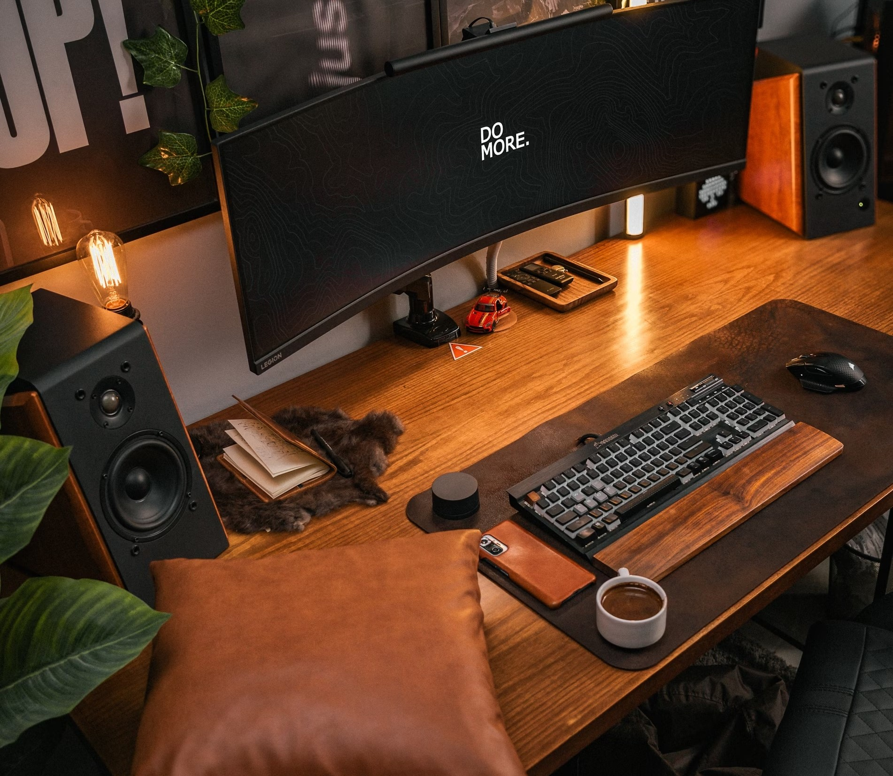

Intro
I'm an IT student at the University of Stuttgart with a strong foundation in programming, web and android development.
My academic journey has instilled a strong work ethic and the ability to translate complex concepts into practical solutions. I'm proficient in Java, Python & C++ and constantly seek opportunities to learn and adapt to new technologies.
This portfolio showcases the blend of creativity and technical expertise I bring to projects, fueled by both my academic background at a top-ranked institution and real-world development experience.

Working Student | Data migration
● Provided integral technical support to the 20-person Global IT Team, leveraging Data Extraction expertise using SQL Query.
● Addressed diverse data migration challenges during Project Fusion through comprehensive research & communication.
● Played a pivotal role in mapping and automating resources for the successful execution of Fusion project's 1st & 2nd phase.
Working Student | Developer
● Led backend development and maintenance, ensuring optimal functionality, performance, and data integrity/security.
● Contributed to user-friendly Android apps, managing projects and optimizing backend databases for efficient data retrieval.
● Performed thorough testing to find and fix bugs in mobile and backend systems, ensuring the delivery of stable and reliable products.
Leveraged Python libraries Beautiful Soup and Selenium to automate web scraping of movie ratings and reviews. Employed Beautiful Soup for efficient HTML parsing and data extraction, while Selenium facilitated dynamic content rendering. Extracted data was then structured and organized using Pandas for further analysis & integration
Designed and implemented a Java application for efficient parking lot management. Utilized object-oriented programming principles to model parking lot components like vehicles, slots, and levels. Employed data structures to track parking occupancy and facilitate efficient search/retrieval operations.
Developed a C++ program to simulate a cricket match, incorporating innings management, team structures, and user interaction. Implemented game logic using random number generation to represent ball outcomes (runs scored, wickets taken, etc.). Maintained game state (score, wickets, overs) and provided a textual representation of the match for user engagement.
Developed a sophisticated air quality monitoring system employing multiple sensors to capture data on pollutants and weather conditions. This system utilizes a GSM module for real-time data transmission and user alerts, notifying individuals of critical air quality changes. The design prioritizes user awareness by incorporating features like SMS notifications.